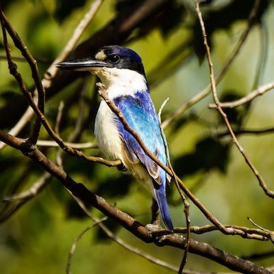

动物介绍
-
猫
猫,是食肉目猫科猫属的脊索动物。猫为肉食性动物,野外靠捕食鼠、鸟、鱼等小动物为生,喜食荤腥, 有偏食的特点。
-
企鹅
有“海洋之舟”美称的企鹅是一种最古老的游禽。
-

海马
海马行动迟缓,却能很有效率地捕捉到行动迅速、善于躲藏的桡足类生物。
-

海狮
海狮有“海中狮王”之称。极擅长潜水,能潜到300多米的深度。
-
鲸鱼
地球上最成功的海洋哺乳动物要属鲸类。它们的身体和四肢骨骼演变得简直就像鱼一样了，难怪被人们俗称为“鲸鱼”。
-
鹈鹕
鹈鹕别称塘鹅或河鸟,是鹈形目鹈鹕科鹈鹕属大型游禽。体型较大,雄性个体大于雌性；嘴形宽大直长,舌小,舌部肌肉发达；颈细长,飞行或休息时,颈部弯曲；翅膀宽大,翼展较宽,扇翅有力。
-
隼
隼是国家二级重点保护动物隼形目隼科鸟类。两翼狭长而尖,尾长而窄；上嘴先端钩曲,边缘具锐利的齿突,脚强健,爪弯曲而尖锐。
-

翠鸟
翠鸟属是佛法僧目翠鸟科中的一属。自额至枕蓝黑色,密杂以翠蓝横斑；背部辉翠蓝色,腹部栗棕色；头顶有浅色横斑；嘴和脚均赤红色。